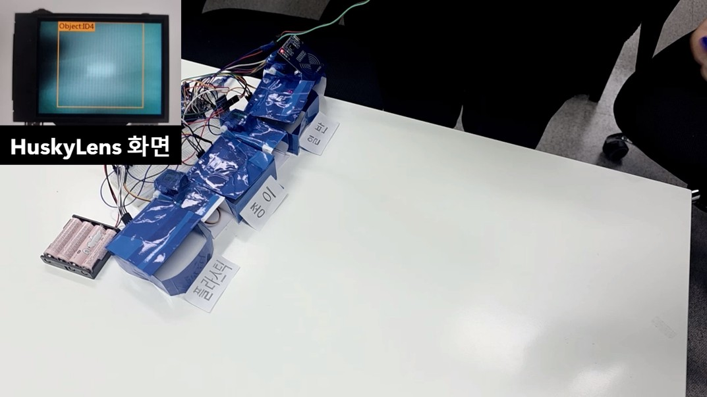
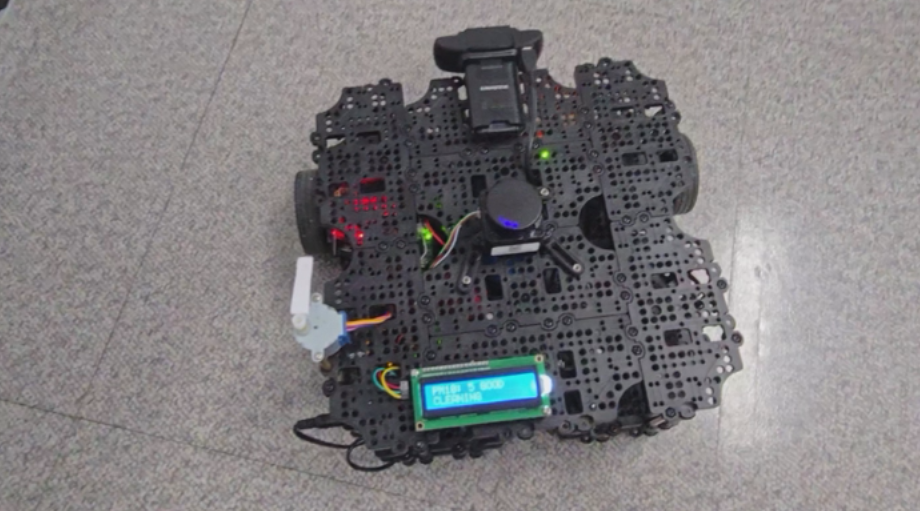

현장 상황 파악
문제가 발생한 시점, 로봇 상태, 설치 환경, 네트워크 연결 상태를 먼저 확인합니다.
Portfolio
자율주행로봇 필드엔지니어
현장에서 발생한 문제를 차분하게 파악하고, 설치부터 검증, 유지보수, 고객 커뮤니케이션까지 책임 있게 이어가고자 합니다. 로봇이 안정적으로 운영되는 현장을 만드는 엔지니어가 되고 싶습니다.
About
문제가 생겼을 때 바로 결론을 내리기보다, 발생 상황과 확인해야 할 항목을 하나씩 정리합니다. 장비, 네트워크, 소프트웨어 상태를 함께 살피며 현장에서 필요한 확인 절차를 만들어갑니다.
Contact
Process
문제가 발생한 시점, 로봇 상태, 설치 환경, 네트워크 연결 상태를 먼저 확인합니다.
가능한 원인을 하나씩 점검하고, 간단한 테스트로 같은 문제가 다시 발생하는지 확인합니다.
확인 결과와 조치 내용, 추가 요청 사항을 정리해 고객 대응과 개발팀 피드백에 활용합니다.
Skills
Other
Project 01
카메라 객체 인식으로 쓰레기 종류를 판단하고, RFID 인증 후 알맞은 쓰레기통을 자동 개폐하는 시스템입니다.

플라스틱, 종이, 일반쓰레기를 구분할 수 있도록 HuskyLens 학습 데이터를 준비하고 인식 결과를 테스트했습니다.
RFID 태그 UID 확인 흐름을 만들고, Arduino와 Raspberry Pi 간 HC-06 블루투스 통신을 연결했습니다.
SQLite DB에 사용자 인증 정보와 사용 기록을 저장하고 장치 제어 코드가 DB에 접근할 수 있도록 구성했습니다.
로그 조회, 상태 확인, 사용자 관리가 가능하도록 웹 대시보드 서버를 개발하고 통합 디버깅을 진행했습니다.
쓰레기가 없는 빈 공간도 특정 쓰레기로 잘못 판단하는 문제가 있었습니다.
“쓰레기 없음” 상태를 별도 클래스로 학습시켜 오인식을 줄이고 동작 종료 조건으로 활용했습니다.
장치가 정상 동작하지 않을 때 카메라 인식, 통신, DB 저장 위치를 나누어 확인하는 습관을 얻었습니다.
Project 02
미세먼지 센서, MQTT 통신, ROS2 기반 자율주행, 웹 대시보드를 연결한 실내 공기질 관리 시스템입니다.

Arduino, ESP-01, PMS7003을 활용한 공기질 측정 모듈을 조립하고 전원부와 센서 연결 상태를 확인했습니다.
센서 데이터가 정상 수집되지 않거나 통신 흐름이 끊길 때 전원, 배선, 모듈 연결 상태를 먼저 확인했습니다.
시연 준비 과정에서 하드웨어 상태를 반복 확인하고 로봇 주행과 센서 데이터 흐름에 영향을 줄 요소를 점검했습니다.
오염 감지, 로봇 이동, 청정 동작, 복귀 흐름이 전달되도록 시연 장면을 구성하고 발표용 영상으로 정리했습니다.
ROS2, IoT 센서, 웹 대시보드가 동시에 연결되어 작은 배선 문제도 전체 시연 흐름에 영향을 줄 수 있었습니다.
전원부, 센서, ESP-01 모듈, 배선 상태를 먼저 확인한 뒤 MQTT 데이터 흐름과 로봇 동작을 확인했습니다.
로봇 시스템은 소프트웨어뿐 아니라 센서, 전원, 배선 상태가 안정성에 직접 영향을 준다는 점을 배웠습니다.